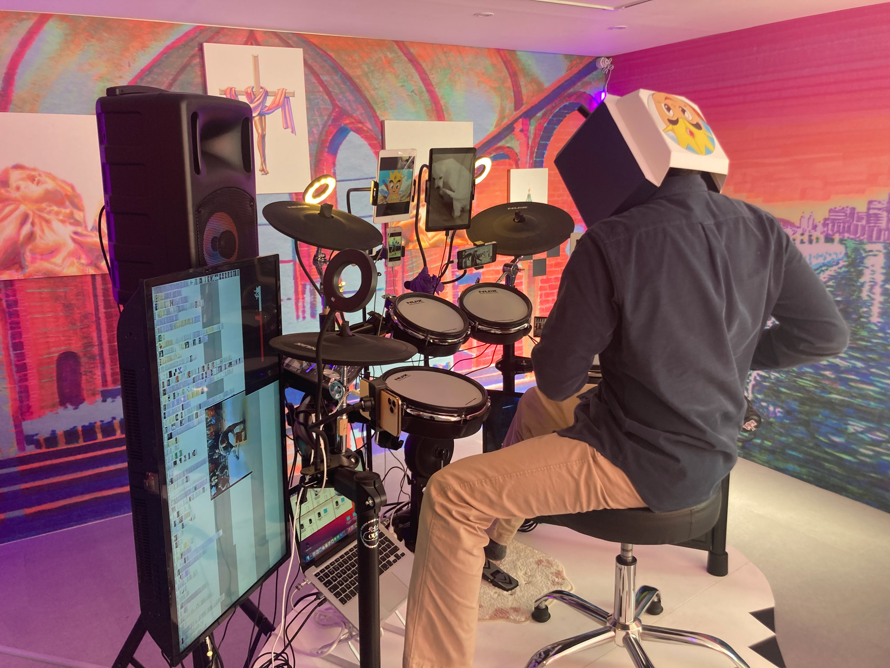

꼬리에 꼬리를 물고 이어지는 대화
<안녕하세요. 재훈 저도 메일을 오랜만에 보내요.
메일을 보내지 않고 쌓아둔 전시가 몇개 있는데 무엇에 대해 이야기해볼까 고민하다,
얼마전 중간지점에서 있었던 '제3회 꼬리에 꼬리를 물고: odd'에 대해서 써보려 합니다.
1부 2부로 나눠져 있는 전시인데요. 1부를 보지 못하셨다면 2부는 꼭 가보시길 권해드립니다.
재미있는 전시였어요.
전시장 입구까지 이어지는 길에 이렇게 두 명의 참여작가와 중간지점이 나눈 대화가 설치되어 있었습니다.
크게 페인팅 작업과 전자 드럼 설치 작업으로 나누어져 있었는데요.
다양한 디스플레이가 설치되어 있는 전자 드럼이 전시장 가운데에, 오리 모양 단상 위에 있었습니다.
전시장에 작가 두분이 다 나와계셔서, 작업에 대해 설명해주셨어요.
그리고 전자 드럼 작업을 하신 작가님이 전자드럼을 연주하는 퍼포먼스를 해주셨어요.
작은 북들에 텍스트를 입력해두어서, 북을 치면 입력된 텍스특가 출력되는 형식이었습니다.
꼬리 꼬리 꼬리 물고 이런식이었어요..ㅎㅎ
관객 참여 프로그램도 있어서, 관객들이 적은 텍스트가 출력되게 설정해둔 버전도 있었습니다.
'개똥아 똥먹니 아니요' 이런 텍스트가 있었는데요.
웃기고 귀여워서 되게 재미있게 봤어요. 소심하게 앉아있던 작가분이 격렬하게 드럼 연주를 하는 모습도 참 인상적이었습니다.
관객이 참여해서 이렇게 텍스트를 적어두면 그걸 전자드럼에 입력하시는 것 같았어요.
귀여운 탈을 쓰고 드럼을 치시는데, 오타쿠 같고 참 귀여워보였습니다.
전시장에 들어서면 작은 책자가 하나 있었는데요.
입구에 설치되어 있는 대화들이 아카이빙 되어 있는 책자였습니다.
작가님들이 이야기하길 서로 대화를 나누면서 서로의 작업에서 흥미로운 부분들을 공유하고, 흥미롭게 느꼈던 부분을 설치에 어떻게 반영할지 논의한 내용 같은걸 엿볼 수 있었어요.
공간 운영자들과도 대화를 나누며 현재 전시 형태에 이른 과정을 볼 수 있어 유익했습니다.
공간 운영자와 작가들. 이런 종류의 전시를 만들어가는데 이상적인 과정이라고 생각해 방문하길 잘했다고 느꼈어요.
2부 전시가 이어진다고하니 기대를 품고 방문해보려 합니다.
재훈도 방문해보길 권해요.
다시금 부지런히 메일을 보내보겠습니다.
좋은 밤 되시고 다음 메일에서 보아요.
고마워요.
손 드림